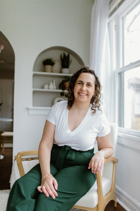

A preview of the strategy I build into every Captured Sites website.
What I do
The secret to inquiry-generating websites
I've studied what makes photographer websites bring in inquiries, and it comes down to five questions visitors need answered before they feel confident reaching out. Building your website to answer these questions is the strategy I build into every Captured Sites website, so let's look at what it could mean for your homepage.
1
What can you do for me?
Within seconds: Am I in the right place? Do you serve people like me? What's the next step? This is your hero section.
2
Why should I trust you?
They want to connect with you, but framed around their desires and pain points, not just facts about you. This is your guide section.
3
What is it like to work with you?
A clear snapshot of your services with an easy path to learn more, words and photos working together. This is your portfolio section.
4
Have you done this before?
Social proof that you've delivered. Even if they don't read every word, testimonials build enormous trust. This is your testimonial section.
5
How do I get started?
Make the next step unmissable, and use it to showcase what makes working with you special from start to finish. This is your steps section.
The strategy in action
Here's the strategy applied to the first section of your homepage
A preview of your new first section:
Shows visitors they're in the right placeGives them a clear path to inquireSounds like you from the first line
Can you see the difference?
Here's your homepage today, next to what it could become.
TodayA preview of your new first section
Why I made the changes I did
1
What top sites do
Their headline helps visitors understand what makes the photographer different, in the photographer's own voice.
What I changed for you
{{P4_CHANGE_1}}
2
What top sites do
They say what they shoot and where, big enough to read at a glance.
What I changed for you
{{P4_CHANGE_2}}
3
What top sites do
They give one clear next step on the first section.
What I changed for you
{{P4_CHANGE_3}}
Next up: two more opportunities I found
1
Fix #1
{{F1_TITLE}}
What I noticed
{{F1_NOTICED}}
Why it matters
{{F1_WHY}}
What I'd change
{{F1_CHANGES}}
2
Fix #2
{{F2_TITLE}}
What I noticed
{{F2_NOTICED}}
Why it matters
{{F2_WHY}}
What I'd change
{{F2_CHANGES}}
Want this strategy built into your whole website?
That's what I do at Captured Sites. I build done-for-you websites for photographers, so every page helps bring in more inquiries.
Now you've seen a few ways your homepage could turn more visitors into inquiries. Imagine if every page of your website was built from the ground up to do the same thing: give visitors what they need at the right time, and lead them to your contact page. This is exactly what I build for photographers all day, every day.
This is what winning websites do:
Homepage
About
Portfolio
Testimonials
Blog
Freebie
Emails
Contact page
Ready for a website that does this on every page?
On a Captured Sites Tour, I'll show you what it looks like to have your website built for you, what's included, and whether it's the right fit for your business.
For photographers exploring a done-for-you website.

By the way, hey! I'm Maggie.
I help photographers book more dream clients
I run Captured Sites, a website studio for photographers.
I build done-for-you websites for photographers who are serious about growing their business. Every site has a strategy behind it, so it does more than show your photos. It helps turn visitors into inquiries.
What I can take off your plate
The strategy for every page, built around how your clients decide
The words, written to sound like you
The design, so your photos and your story work together
The SEO, so the right clients can find you
So you don't have to figure it out on your own.
Thinking about a professionally built website?
If you're ready to invest in a website for the business you're building, let's talk. Your Captured Sites Tour is a conversation about having your whole site built for you.
Your fixes were made with my homepage review process and AI, based on the website information available at the time of review. They cover your homepage only. Maggie Luk, Captured Sites